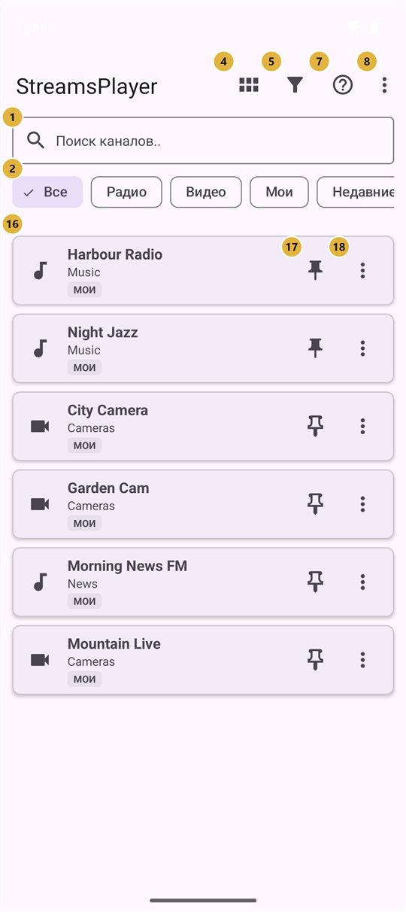
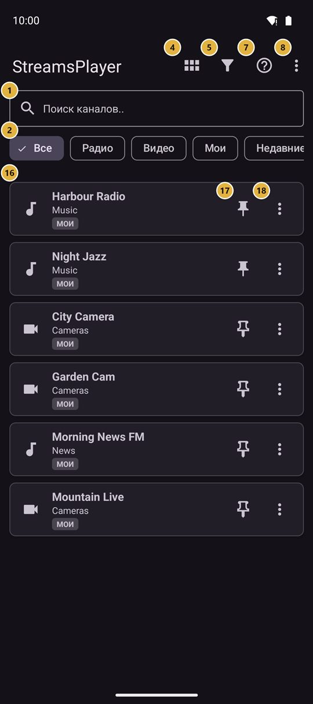

StreamsPlayer
Для чего этот экран
Главный экран: ваш список радиостанций, видеопотоков и камер. Найдите канал, запустите одним касанием, держите любимые вверху и добавляйте свои.


Порядок действий
- Найдите канал: введите название в поле поиска 1 или сузьте список кнопками типов 2.
- Когда список длинный, откройте «Фильтр и сортировка» 5: там коллекция, категория, язык и страна.
- Коснитесь канала 16, чтобы воспроизвести его. Радио играет прямо здесь, и появляется панель радио 19; видео открывается на весь экран.
- Закрепляйте каналы, к которым возвращаетесь 17: они остаются вверху списка.
- Добавьте свой адрес кнопкой «Добавить канал» 9 или целый список через «Импорт плейлиста» 11.
Элементы
Поиск и фильтры
1Поиск каналов..Сужает список по мере ввода.
Ищет по названию канала. В списке остаются только подходящие каналы, а заданные фильтры продолжают действовать.
- Отмена
- Очистите поле, и список снова будет полным.
- Сочетание клавиш
- Ctrl + F
2Все, Радио, Видео, Мои, НедавниеВсе, Радио, Видео, Мои или Недавние.
Одно касание показывает только этот тип: радиостанции, видеопотоки, ваши собственные каналы или те, что вы недавно запускали. «Все» показывает всё. «Мои» сначала перечисляют прямые трансляции ваших других устройств по устройствам, а затем сохранённые вами потоки.
- Отмена
- Выберите «Все».
3Сбросить фильтрыПоявляется, когда включён фильтр или поиск.
Строка над списком называет то, что сейчас сужает список. Эта кнопка разом убирает фильтры и текст поиска.
- Отмена
- Задайте фильтры снова в «Фильтре и сортировке».
Верхняя панель
4Сетка / СписокПереключает список между сеткой и списком.
На значке показан вид, который вы получите. Выбор запоминается.
- Отмена
- Коснитесь значка ещё раз.
5Фильтр и сортировкаОткрывает лист фильтра и сортировки.
Сузьте список по коллекции, категории, языку и стране, оставьте только закреплённые каналы и выберите порядок.
6Управление вещаниемОткрывает «Управление вещанием».
Превратите телефон в живую станцию: звук или ещё и камера. Этот экран описан на отдельной странице.
7СправкаОткрывает эту страницу.
Эта кнопка есть на каждом экране, в конце верхней панели. Она объясняет экран, на который вы смотрите, не выводя из приложения и без сети.
- Сочетание клавиш
- F1
Пункты меню
9Добавить каналДобавляет один адрес вручную.
Открывает короткую форму: адрес, название, тип потока и категория. Изменять и удалять можно каналы, добавленные вручную.
10Недавние каналыКаналы, которые вы недавно запускали.
Открывает список недавних каналов. Коснитесь канала, чтобы воспроизвести его; «Очистить недавние» опустошает список.
- Отмена
- Очистку нельзя отменить.
11Импорт плейлиста (.m3u)Приносит каналы из плейлиста по адресу.
Вставьте адрес плейлиста .m3u или .m3u8 и нажмите «Импортировать». Каналы из него добавятся в ваш список; уже имеющиеся не дублируются.
12Импорт трансляцииДобавляет прямую трансляцию чужого устройства.
Вставьте ссылку или описание трансляции, выберите файл .fmsbcast или .json либо отсканируйте QR-код, который показывает вещающий. Трансляция появится в списке как канал.
13Обновить каталогЗагружает актуальный каталог каналов.
Обновляет готовый список станций. Ваши каналы и закрепления сохраняются. После обновления приложение предлагает скачать обложки каналов. В разделе «Мои» тот же пункт обновляет прямые трансляции ваших других устройств.
14Обмен медиа и трансляцииОткрывает руководства в браузере.
Короткий список тем об обмене медиа и прямых трансляциях. Каждая тема открывает веб-страницу, поэтому нужна сеть.
15Сервер обменаОткрывает экран сервера обмена.
Здесь вы входите на свой сервер обмена и видите трансляции своих других устройств.
23НастройкиОткрывает настройки.
Тема, язык, настройки вещания и всё об этом приложении.
Каналы
24Обновить список каналов?Предлагает список каналов, опубликованный после вашего последнего обновления.
Когда вы открываете список, приложение проверяет, опубликован ли более новый каталог каналов, и эта строка появляется над списком, только если он есть; на новом телефоне она предлагает первый список. «Обновить» скачивает его так же, как «Обновить каталог» в меню. «Закрыть» убирает строку, и тот же список больше не предлагается, а опубликованный позже - предлагается. «Настройки > Основные > Обновление списка каналов» решает, проверяет ли приложение вообще и обновляет ли оно список само по Wi-Fi.
- Отмена
- «Обновить каталог» в меню обновляет список в любой момент.
16Список каналовВаши каналы, закреплённые вверху.
Коснитесь строки, чтобы воспроизвести канал. В строке видны название, тип потока и то, играет ли канал сейчас. Картинка в строке - превью для видеоканала, иначе логотип станции, иначе её маленький значок, иначе знак типа потока. В сетке превью или логотип занимают всю ширину карточки. После обновления каталога приложение предлагает скачать превью и логотипы, показывая их размер; «Позже» оставляет всё как есть, и при следующем обновлении вопрос повторится. В разделе «Мои» строка прямой трансляции показывает устройство и то, в сети ли оно; коснитесь её, чтобы слушать или смотреть, а «Сохранить» оставляет её каналом. Длинный список прокручивается; поиск и фильтры делают его короче.
17ЗакрепитьДержит канал вверху списка.
Закреплённый канал стоит выше остальных в том порядке, в каком вы закрепляли. Той же кнопкой его можно открепить.
- Отмена
- Коснитесь булавки ещё раз.
18ЕщёОткрывает действия для одного канала.
Воспроизвести, закрепить или открепить, поделиться адресом, скопировать адрес, а для добавленных вами каналов ещё и редактировать и удалять. С аппаратной клавиатурой то же делают клавиша Menu или Shift+F10.
- Сочетание клавиш
- Shift + F10
Мои
21Состояние раздела «Мои»Показывает, актуален ли список ваших других устройств.
В разделе «Мои» эта строка показывает, когда список прямых трансляций обновлялся в последний раз, что это последний известный список или почему его нельзя показать. Кнопка рядом называется «Повторить», «Настроить» или «Войти» - какая подходит.
22ОбновитьЗапрашивает у сервера обмена текущие трансляции.
Загружает прямые трансляции ваших других устройств заново. Сохранённые потоки и то, что играет, остаются как есть, а общий каталог каналов не загружается.
Панель радио
19Панель радиоУправляет играющим радио.
Показывает станцию и имеет кнопки воспроизведения и паузы и закрытия. Радио продолжает играть, когда вы выходите из приложения; закрытие панели останавливает его.
- Отмена
- Коснитесь радиоканала в списке, чтобы запустить его снова.
20Таймер снаОстанавливает радио через выбранное время.
Открывает лист с готовыми значениями от 15 до 60 минут и своим временем. Пока таймер идёт, на кнопке видны оставшиеся минуты. «Отменить таймер» выключает его.
- Отмена
- Откройте лист и выберите «Отменить таймер».